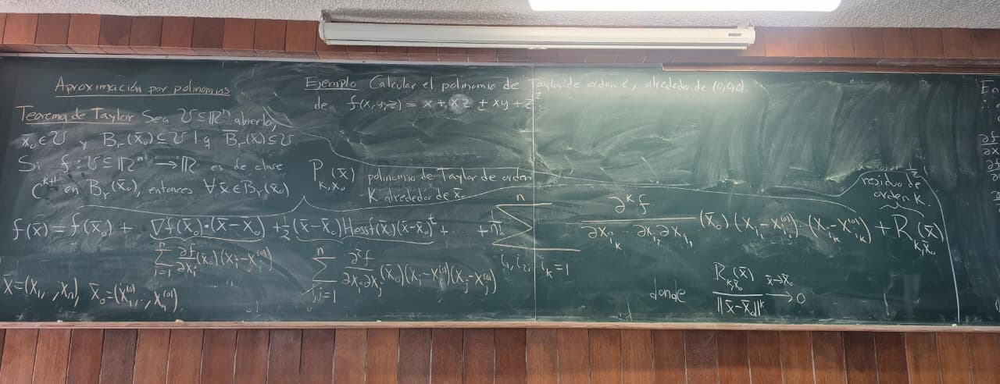

Física teórica, matemáticas avanzadas y optimización computacional.

Análisis de campos vectoriales, gradientes y teoremas fundamentales de integración en $\mathbb{R}^n$.
Formulación lagrangiana, espacios de fase y la optimización de trayectorias en sistemas dinámicos.